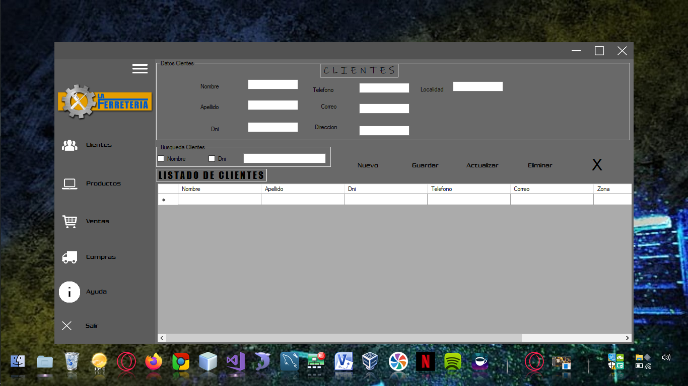
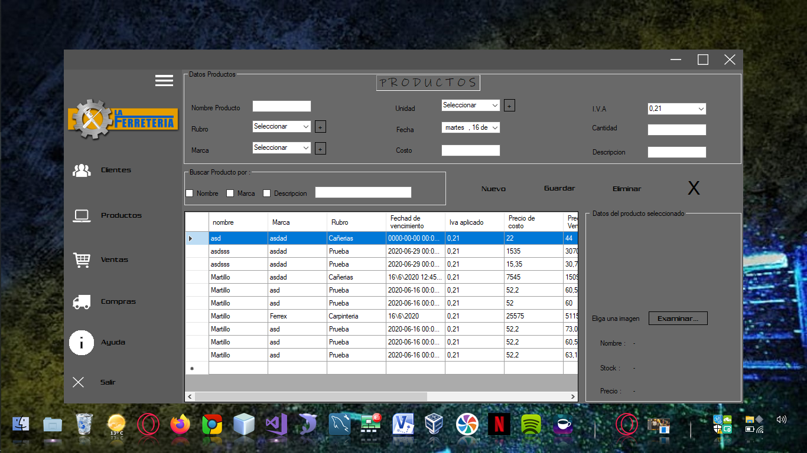

Creación de un “Gestión de punto de venta para ferretería” que permite al negocio llevar el control y mantenimiento constante de sus productos, stocks, adquisiciones y las ventas de los productos en la misma tienda donde se desempeña la actividad comercial. El sistema estará instalado por el momento en una sola máquina, donde solo el personal autorizado deberá poder tener acceso.
Principales Funcionalidades
-Gestion de Ventas: Agiliza la gestión de ventas Minoristas y Mayoristas. Registro y emisión de comprobantes de venta, presupuestos, pedidos, remitos, facturación electrónica - Gestión de Compras: Manejo de toda la gestión de compras. Registro de comprobantes de compra. Facturas, notas de débito, notas de crédito, requerimientos, solicitudes, presupuestos, pedidos, remitos. - Gestión de Caja: Manejo y consulta de múltiples cajas de uno o varios locales. - Stock: Administra y controla el stock de mercadería entre los locales, reflejándolo automáticamente en el sistema. Realiza consultas de stock local y entre locales. Informa sobre mínimos y máximos de stock y cantidades de stock en tránsito. - Toma de Inventario: Controla y ajusta las diferencias del stock del sistema en función al inventario físico. - Consultas: Realiza consultas de stock, precios, disponibilidad de la mercadería, de clientes y de proveedores. - Administrador: Seguridad y herramientas centralizadas para mejor manejo del sistema. Crea configuraciones
Cargar clientes a la base de datos
Esta es la pantalla de abml. En ella podemos hacer las alta, bajas, modificaciones y lecturas de los clientes que tenga el negocio.
Datos Clientes
- Es un panel que divide el ingreso de datos de los clientes.
- Se solicitan todos los datos necesario para tener registro y mantener comunicado al cliente de ser necesario.
Busqueda Clientes
- Es un panel que divide la busqueda de los clientes guardados en la db. Tiene unos Checkbox para facilitar el filtro de busqueda.
- Tiene una caja de texto en donde se puede escribir cualquier dato que se quiera obtener sin saber el nombre del cliente.
Tabla para la vistas
- En este DataGridView se muestran, por defecto, todos los Clientes que haya en la base de datos
- Obviamente, en esta tabla se van a ir mostrando los resultados filtrados de la busqueda hecha.
Cargas de productos
Video del programa
En este pequeño video muestro algunos detalles y cómo dar de alta los productos.